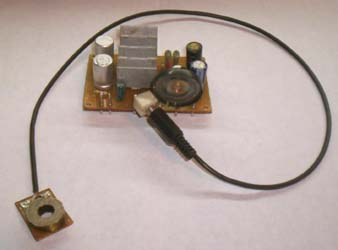
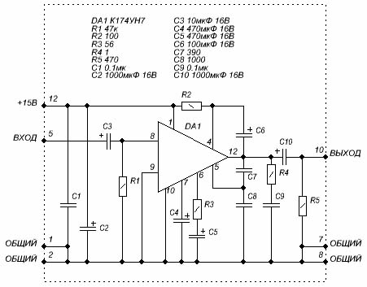
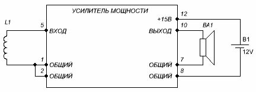
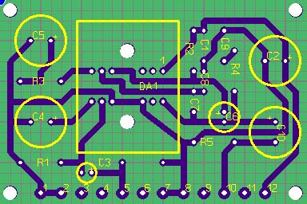
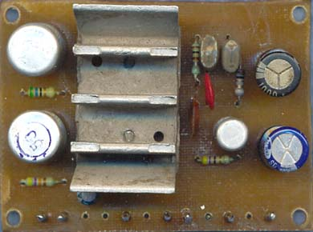

Аудиоконтроллер переменного магнитного поля звуковой частоты

При работе с переменными магнитными полями иногда возникает сомнение - присутствуют ли они в действительности в зоне эксперимента. Оперативно контролировать магнитные поля низкочастотного (звукового) диапазона удобно на слух. Для этого используется усилитель мощности низкой частоты (УНЧ), к выходу которого подключается динамическая головка, а ко входу - измерительная катушка [1], находящаяся в зоне действия переменного магнитного поля. Подобное устройство можно считать аудиоконтроллером переменного магнитного поля.
Параметры УНЧ аудиоконтроллера переменного магнитного поля:
Схема принципиальная усилителя мощности
Схема электрическая принципиальная УНЧ аудиоконтроллера показана на рис. 1.

Рис. 1. Схема электрическая принципиальная низкочастотного усилителя мощности.
УНЧ построен по типовой схеме на микросхеме К174УН7. Схема подключения УНЧ к измерительной катушке, источнику питания и динамической головке приведена на рис. 2, эскиз печатной платы усилителя представлен на рис. 3, а внешний вид - на рис. 4.

Рис. 2. Схема подключения усилителя мощности.

Рис. 3. Печатная плата усилителя мощности (размер платы 75 х 50 мм2).

Рис. 4. Внешний вид печатной платы усилителя мощности аудиоконтроллера.
Измерительная катушка
Измерительная катушка, как правило, представляет собой цилиндрический соленоид. Коэффициент преобразования измерительной катушки выбирается в зависимости от уровня индукции и частоты контролируемого переменного магнитного поля [1] и определяет ее конструкцию (размеры, диаметр обмоточного провода и число витков). В некоторых случаях для повышения коэффициента преобразования можно использовать длинные катушки с ферромагнитными сердечниками.
Состояние разработки:
Аудиоконтроллер переменного магнитного поля изготовлен в одном экземпляре и используется в лабораторных условиях для проведения различных экспериментов с источниками переменных магнитных полей, создаваемых в соленоидальных системах [2] с помощью усилителей мощности [3], работающих совместно с различными источниками сигнала.
Ссылки:
25.04.2013
Альтернативные источники
энергии
Компьютеры и
Интернет
Магнитные поля
Механотронные системы
Перспективные
разработки
Электроника и технология